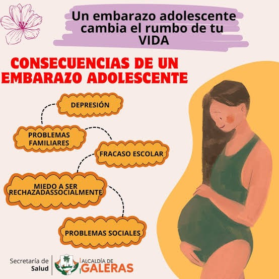
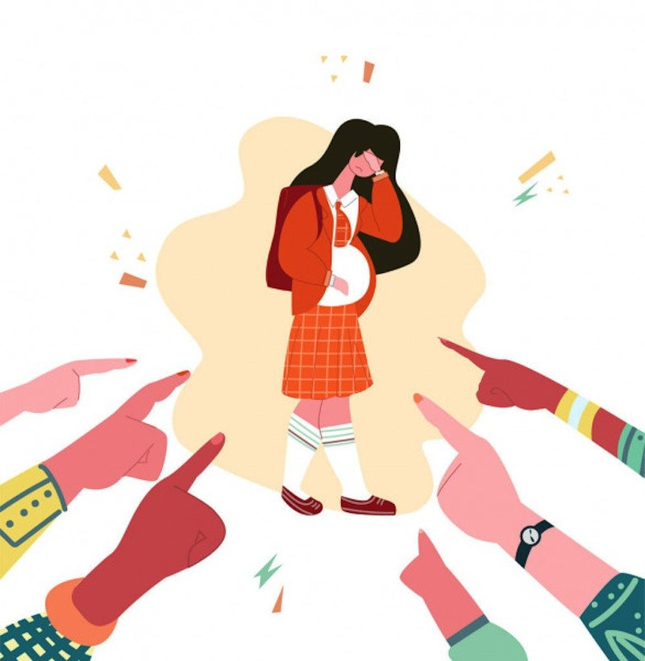

Falta de educación sexual
Sin información clara sobre reproducción, anticoncepción y salud sexual es más difícil decidir bien.
Prevención del embarazo adolescente, contada claro y sin juicios.
Infórmate · Decide · Cuídate · Construye tu futuro
Es el que ocurre durante la adolescencia, generalmente entre los 10 y los 19 años. Puede traer cambios físicos, emocionales, familiares, sociales y educativos.
Prevenirlo significa dar información, educación sexual integral, acceso a servicios de salud y herramientas para decidir con responsabilidad sobre el cuerpo, las relaciones y el futuro.

No hay una sola causa. Casi siempre es la suma de factores personales, familiares y sociales.
Sin información clara sobre reproducción, anticoncepción y salud sexual es más difícil decidir bien.
Algunas personas se sienten presionadas a iniciar relaciones sexuales para las que no están preparadas.
Cuando es difícil hablar de sexualidad, límites y protección, las dudas se quedan sin respuesta.
La desinformación y los prejuicios impiden que muchos jóvenes reciban atención adecuada.
La violencia, la falta de oportunidades y las condiciones económicas también aumentan el riesgo.
Hablamos de los desafíos sin señalar a nadie: las madres y los padres adolescentes merecen respeto y apoyo.
Un embarazo adolescente no significa abandonar los sueños. Quienes lo viven necesitan apoyo, respeto y oportunidades para estudiar y desarrollar su proyecto de vida.

Muchas veces lo más duro no es el embarazo, sino el juicio de los demás. Señalar, burlarse o excluir empuja a las adolescentes a esconderse y a no pedir ayuda a tiempo.
Escuchar sin juzgar es la primera forma de cuidar.
Ayudan a prevenir embarazos. Cada uno tiene ventajas y condiciones de uso, y un profesional de salud puede orientarte para elegir.
Método de barrera que evita el embarazo y reduce el riesgo de infecciones de transmisión sexual (ITS), incluido el VIH.
Protege contra ITSMedicamentos hormonales que previenen el embarazo. Deben usarse según las indicaciones de un profesional de salud.
No protege contra ITSPequeño dispositivo que el personal de salud coloca bajo la piel del brazo. Libera hormonas durante varios años, según el producto.
No protege contra ITSLo coloca un profesional de salud dentro del útero. Hay versiones hormonales y de cobre.
No protege contra ITSMétodo hormonal que se aplica periódicamente, según el tipo de inyección y las indicaciones médicas.
No protege contra ITSNo existe un método ideal para todas las personas: depende de las necesidades, preferencias y condiciones de salud de cada quien. Una estrategia clave es la doble protección: preservativo junto con otro método, para prevenir embarazos e ITS.
La prevención empieza con información, respeto y responsabilidad.
En Colombia, el Ministerio de Salud promueve servicios de salud amigables para adolescentes y jóvenes, donde se recibe orientación y atención en salud sexual y reproductiva.
Nadie debe ser obligado a tener relaciones sexuales ni a aceptar prácticas con las que no está de acuerdo. Tampoco es necesario tener relaciones durante la adolescencia: cada persona decide cuándo está lista, y también puede decidir no tenerlas.
Toca cada tarjeta para descubrir qué hay de cierto.
Hablar de sexualidad no debería dar vergüenza. Todos necesitamos personas que escuchen y orienten sin juzgar.
Padres y cuidadores pueden dar confianza, acompañamiento y orientación.
Los docentes pueden abrir espacios de aprendizaje y reflexión sobre sexualidad y prevención.
Comparte información confiable y evita difundir rumores o consejos que pongan en riesgo a otros.
Los profesionales resuelven dudas, explican los métodos y dan orientación personalizada.
Si el embarazo se confirma, tienes derecho a atención integral, información y acompañamiento sobre las opciones disponibles, conforme a la legislación colombiana.
Si el embarazo está relacionado con abuso, violencia o coerción, busca atención y protección especializada de inmediato.
Puede ayudar a prevenir un embarazo después de una relación sin protección o cuando un método pudo haber fallado.
Pide orientación médica lo antes posible.
No reemplaza a un método anticonceptivo regular.
No actúa sobre un embarazo ya establecido.
Un profesional puede explicarte las opciones y cómo usarlas.
No tienes que sentir vergüenza por pedir orientación: los servicios de salud están para atender estas situaciones.
La adolescencia es una etapa de descubrimiento y de sueños. Prevenir también es dar oportunidades para que cada persona construya su camino.
Terminar el colegio e ingresar a la universidad.
Aprender nuevas habilidades y desarrollar talentos artísticos o deportivos.
Conseguir independencia económica en el futuro.
Construir vínculos basados en el respeto y tomar decisiones conscientes sobre la maternidad y la paternidad.
Prevenir un embarazo no es rechazar la maternidad o la paternidad: es entender que son decisiones importantes que se toman libremente y con responsabilidad.
La prevención no es solo de las mujeres. Los hombres también tienen que participar activamente.
Estas instituciones ofrecen información y orientación.
Información sobre salud sexual, reproductiva y prevención del embarazo adolescente.
Visitar sitioOrganización que trabaja en salud sexual y reproductiva, educación y orientación.
Visitar sitioProtección y orientación para niños, niñas, adolescentes y sus familias.
Visitar sitioPide asesoría sobre planificación familiar, anticoncepción y salud sexual y reproductiva. Pregunta también por los Servicios de Salud Amigables para Adolescentes y Jóvenes.
Desde que comienza la capacidad reproductiva. Por eso es importante recibir educación e información desde edades tempranas.
No. También tiene consecuencias y responsabilidades para los hombres, las familias y la comunidad.
Sí. La educación sexual integral, las decisiones informadas y el acceso a métodos anticonceptivos son herramientas fundamentales.
No. Cada persona decide cuándo está preparada y también puede decidir no tener relaciones.
Sí. En Colombia pueden pedir información y asesoría en los servicios de salud sexual y reproductiva.
Reduce mucho el riesgo de varias infecciones cuando se usa bien, pero no elimina todos los riesgos.
Nadie debe ser obligado a tener relaciones ni a aceptar prácticas con las que no esté de acuerdo. Pon límites y busca apoyo si hay presión.
Infórmate hoy para tomar decisiones responsables mañana.
El respeto, la comunicación y la protección son fundamentales.
Nadie debe presionarte para decidir sobre tu sexualidad.
AperturaHola, bienvenidos a Hablemos sin miedo, un vlog para hablar claro sobre el embarazo adolescente.
Por qué existeMuchas veces nadie nos explica estos temas, y las dudas se quedan guardadas. Aquí vamos a conversar sin juicios y con información confiable.
Qué vas a encontrarHablaremos de las causas y las consecuencias, de los métodos anticonceptivos, de tus derechos y de dónde pedir ayuda en Colombia.
CierreInformarte es cuidarte. Tu cuerpo, tus decisiones y tu futuro importan. Gracias por acompañarnos.